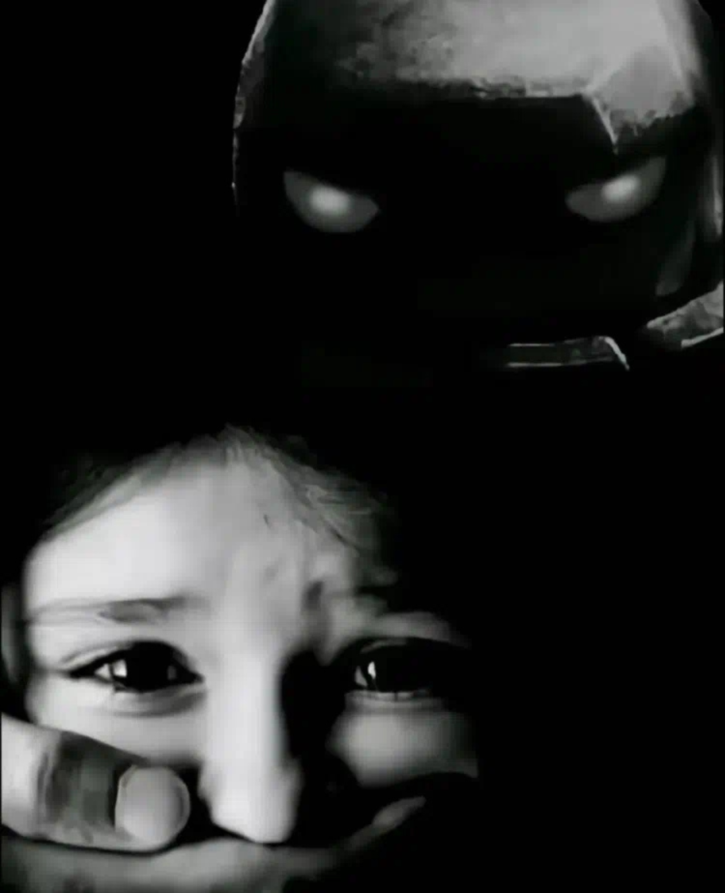

Cardume de Bagres
Seção em desenvolvimento. A lista de bagres foi transferida da tela inicial pra cá - by Borges.
SIGA @bagreroyale NO INSTAGRAM!!!
NÃO GRITA!

Seção em desenvolvimento. A lista de bagres foi transferida da tela inicial pra cá - by Borges.
SIGA @bagreroyale NO INSTAGRAM!!!
